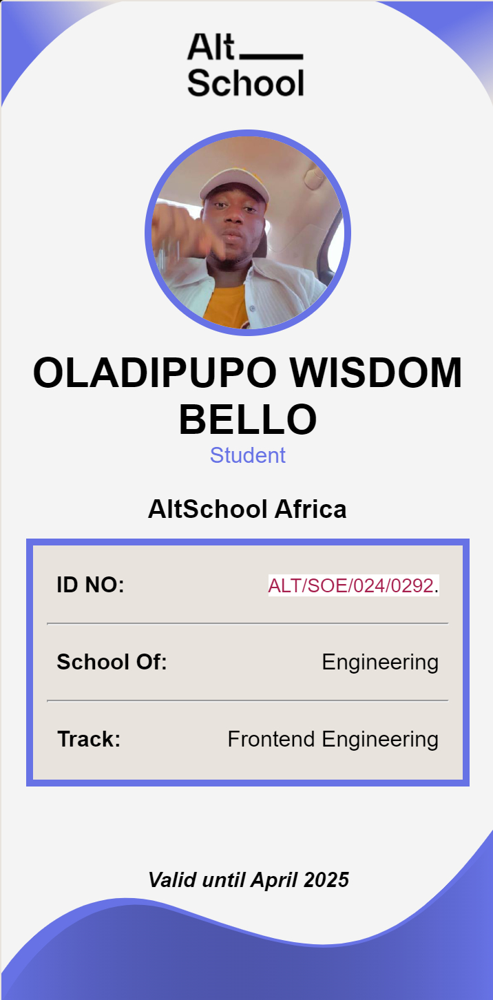

Biography
- Name: my name is oladipupo wisdom bello
- age: i was born on the 17th of march 2000 and i am 23 years old
- Birthplace: i was born in Minna,niger state
- Education: I did most of my school in my place of birth which is maikunkele minna like for my nusery school i attended kleto international school and formy primary and secondary school i attended Quaity,nusery,primary and secondary school all through.My highest level of Education is my Bachelor's degree in biological Science at the university of Abuja . i studied there for four
- Occupation: i am currently working at a computer training center where i am also undergoing a diploma training course for basic computer application i am currently able to create documents and desighn with software application like microsoft word and i am currently learning how to do numerical data anakysis and presentation with microsoft excel
- hobbies: i am currently interested in few things which i find pleasure in , some of them are going to church, listening to messages, going through github open source projects and repositories , reading books , watching anime and eating
- Family members: i am currently blessed with a big beatifull familly of seven made up of five boys(children) one relative(daughter of my aunt currently staying with us) one parent(my mom) my dad unfortunately is late.
- personal statement: as for me and what i will say about myself and values , i would say i consider myself a very serious minded person but very playefull in conversation and expressions . I like funny jokes and enjoy conversation about spiritual things

Goals and why i joined AltSchool
my goal currently is to become a top world class frontend web developer and create web applications that help solve problems for millions of people in different countries and also make me stand out as an expert and well versed engineer in the world of tech
why i joined AltSchool
the major reason i joined AltSchool is for direction with my learning and networking other software developers so i can better integrate my knowledge and skiils into teh tech community